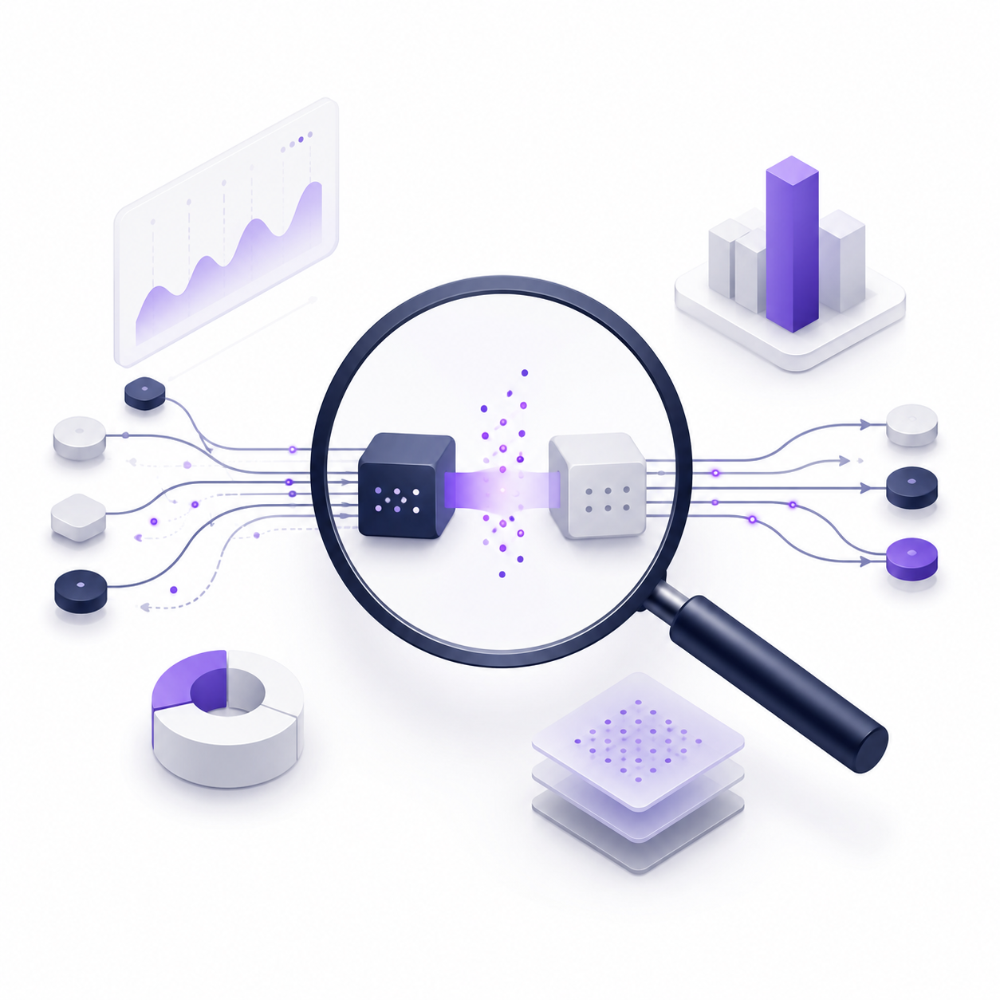
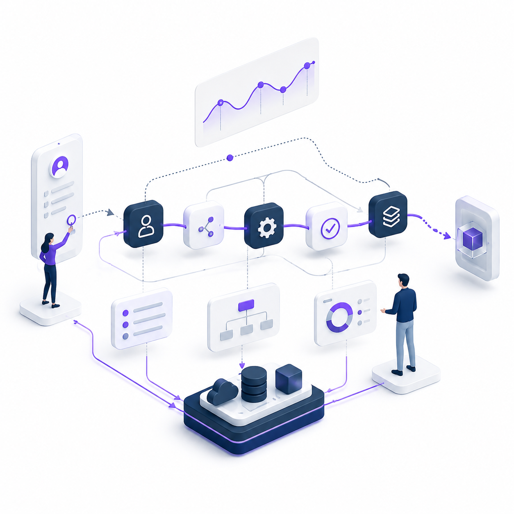
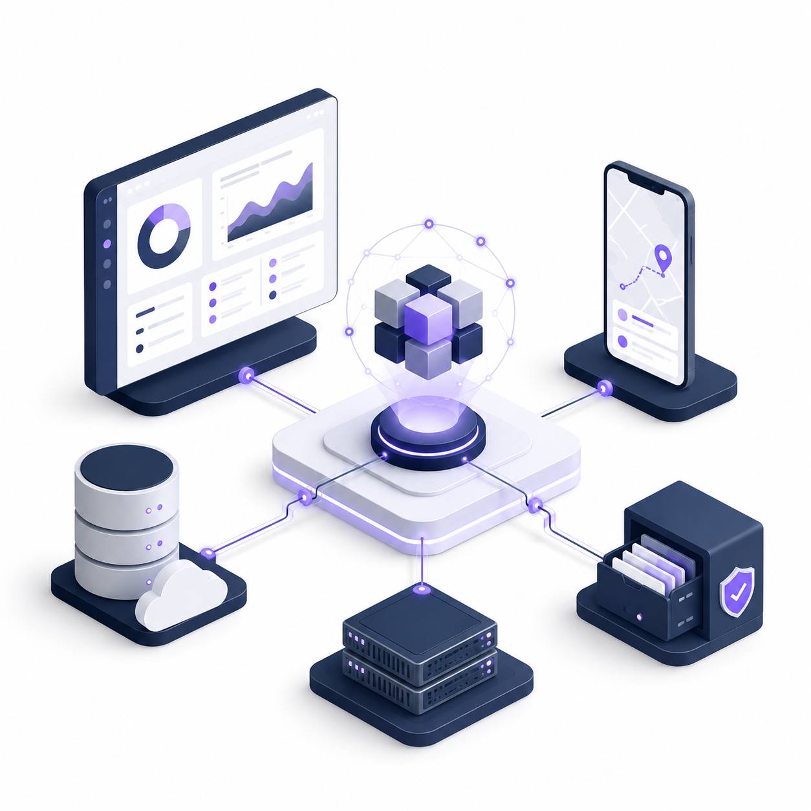
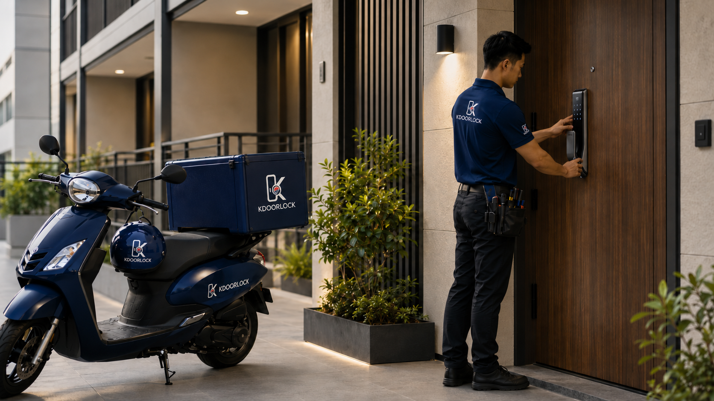

Observe the Gap
반복되는 판단과 운영 병목을 데이터 신호로 관측합니다.
AI SERVICE PLATFORM STUDIO
우리는 데이터를 단순히 보여주는 것이 아니라,
사용자가 행동하고 사업자가 운영할 수 있는 서비스 흐름으로 바꿉니다.
Observe · Structure · Operate
COMPANY IDENTITY
JackP Oracle은 사람을 평가하지 않습니다. 사람이 더 잘 판단하고, 사업이 더 잘 운영될 수 있는 구조를 설계합니다.
JackP Oracle은 단일 앱을 만드는 회사가 아닙니다. 우리는 복잡한 판단, 반복되는 행동, 현장 운영의 병목을 관측하고 이를 사용자가 실행할 수 있는 서비스 구조로 설계합니다.
분석이 필요한 영역에는 리포트 엔진을, 현장 운영이 필요한 영역에는 앱과 서비스 워크플로우를 만듭니다.

반복되는 판단과 운영 병목을 데이터 신호로 관측합니다.

사용자가 행동하고 사업자가 운영할 수 있는 흐름으로 설계합니다.

리포트, 대시보드, 현장 앱, 이력 인프라를 하나의 서비스로 연결합니다.
OUR PLATFORMS
서로 다른 산업처럼 보이지만, 두 플랫폼은 같은 질문에서 출발합니다.
“복잡한 데이터를 어떻게 실행 가능한 서비스 흐름으로 바꿀 것인가?”
Decision Data → Pattern Analysis → AI Report
HoldemDNA는 판단 데이터를 실행 가능한 리포트로 만든 플랫폼입니다. 사용자의 선택과 반응 패턴을 통해 반복되는 판단 흐름을 보여줍니다.
정답을 외우는 서비스가 아니라, 사용자가 반복해서 흔들리는 지점을 발견하고 실행 가능한 루틴으로 되돌리는 리포트 플랫폼입니다.
Field Data → AI Pre-Check → Installation & AS Workflow

KDoorLock은 현장 서비스를 운영 시스템으로 연결하는 플랫폼입니다. 한국 디지털 도어락 제품군을 현지 설치기사, QR 등록, 사후서비스 흐름과 연결합니다.
제품 판매 이후의 문 사진 확인, 설치 가능성 검토, 기사 배정, 설치 검수, QR 기반 AS 접수를 하나의 운영 흐름으로 관리합니다.
CORE SYSTEM
JackP Oracle의 플랫폼은 산업은 달라도
공통된 시스템 구조 위에서 설계됩니다.
복잡한 선택과 현장 데이터를 분석 가능한 신호로 전환합니다.
사용자의 판단 흐름과 반복 패턴을 리포트로 구조화합니다.
서비스가 실제로 작동하도록 접수, 검토, 배정, 완료 흐름을 설계합니다.
사업자가 운영 현황을 한눈에 확인하고 다음 작업을 배정할 수 있게 합니다.
현장 담당자가 필요한 정보만 간단하게 확인하고 작업을 완료할 수 있게 합니다.
제품, 설치, 서비스 이력을 추적 가능한 기록으로 연결합니다.
단순 문의를 제품군, 수량, 파트너 조건이 포함된 사업 기회로 전환합니다.
WHY THEY BELONG TOGETHER
HoldemDNA와 KDoorLock은 전혀 다른 산업처럼 보입니다. 하나는 판단 데이터를 다루고, 하나는 현장 설치와 사후서비스를 다룹니다.
그러나 두 플랫폼의 본질은 같습니다. HoldemDNA는 판단 데이터를 리포트로 만든 사례입니다. KDoorLock은 현장 서비스를 운영 시스템으로 만든 사례입니다.
JackP Oracle은 이 둘을 만드는 AI Service Platform Studio입니다. 이 두 사례를 통해 복잡한 문제를 AI 기반 서비스 흐름으로 전환하는 방식을 검증하고 있습니다.
HISTORY / TIMELINE
JackP Oracle은 판단 데이터를 리포트로 구조화한 경험을 바탕으로, 현장 운영 데이터까지 실행 가능한 서비스 시스템으로 확장하고 있습니다.
판단 패턴과 실행 격차를 구조화하는 초기 모델을 설계했습니다.
사용자의 선택 데이터를 AI 리포트로 전환하는 플랫폼 구조를 검증했습니다.
법인 설립 이후 HoldemDNA 고도화와 KDoorLock 플랫폼 기획을 본격화했습니다.
한국 디지털 도어락을 현지 설치·QR 등록·AS 흐름과 연결하는 글로벌 서비스 모델을 준비합니다.
판단 데이터와 현장 운영 데이터를 실행 가능한 서비스 시스템으로 전환하는 플랫폼 포트폴리오를 구축합니다.
COMPANY / CONTACT
주식회사 잭피오라클
JackP Oracle Co., Ltd.
HoldemDNA
KDoorLock